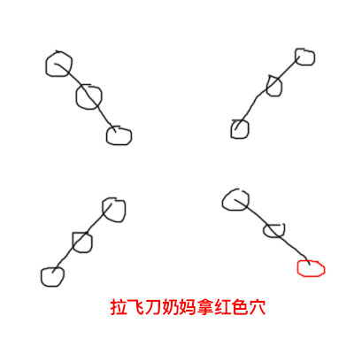
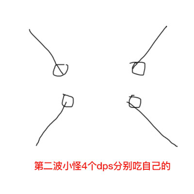

90％ 出小怪鹤王 点名最远的人落火 被点名人身上有BUFF倒计时 掐准时间可在边上的熔浆三段跳让火落在岩浆里
70％ 出小怪鹰王 龙卷风对碰 同101 注意多出的风会一直跟着 需等待第二个风出现碰掉 或者继续利用落火技巧 让风走进岩浆也可卡掉
50％ BOSS下蹲 全屏伤害 一定要跳 （没跳的话会让BOSS加层数 层数会加伤害） 并点名一个人黑屏（黑屏的人什么技能都不能放）
然后会出现一个小怪 先杀小怪 黑屏的人就可以放技能了 再打BOSS 循环到死 （基本岩浆稍微放好点没难度）
老二 火金木土水 五同八不同 五种属性五个人拿不可少85％ 破定小怪
70％ 破定小怪
55％ 破定小怪
40％ 破定小怪
25％ 破定小怪 特别注意!!!
打完小怪（拿完最后的水BUFF）立马出五行大阵 （破解方法：拿什么属性站什么属性的小怪面前面前 可在水BUFF快打死的时候提前站位）占完阵法后 输出相克的小怪 （快速找相克小怪的方法：站阵位置左手边第二个）
打完所有小怪 BOSS就虚弱了输出BOSS就行
老三 90出线三阴交 足三里 百会 神关 四种小穴 每种三个
75％出飞刀 拉线割出小怪 四排怪一排三个 指定四个人 拿完身上应该为一人三个BUFF （偶尔会出现四个 不影响）
之后还要出四个持续向中间BOSS行进的小怪（行进路线同之前四排小怪的位置） 跟前面的小怪一样隐身的 只是会动了 需要通过拉飞刀现行 第一波怪的小怪带有BUFF之前指定四人打死再吃一个 合计一人四个
之后还是继续出四个持续向中间BOSS行进的小怪 持续拉飞刀 （如果让小怪进入BOSS身体，BOSS层数会增加，层数越高会让BOSS伤害越高 注意：第一波行进的小怪没打掉没拿全BUFF就灭了）
持续到40％出踩阵 四个BUFF踩完四次拿四种大穴 在踩完大阵 之后重复各种红圈技能三段跳跳全屏 撸到结束为止（全屏伤害可靠奶妈风墙 45S 计时 或者看BOSS身上出现许多把武器在临时反应跳起）
老四90％ 出剑 躲莲花（躲莲花方式 持续按住空格） 破小剑 （前面同101）
70％ 进阶段多出两个小怪 一叫做***煞 一叫做***悲
BOSS多出一个技能 飞刀 出飞刀尽量别被飞刀打到 降低大量属性
注意多出来的技能 飞刀 BOSS身上会先出小龙卷风 再从龙卷风里出来的飞刀 出飞刀技能的时候太靠近boss会被BOSS身上的龙卷风秒杀其他技能同101
神威不拉大BOSS仇恨 去(DPS)一个拉住BOSS（明月心） 要持续躲BOSS技能 注意面相 拉住BOSS仇恨的人不能跟打小怪的人群一边（拉明月心的一半圆 拉两个小怪的一半圆
两个小怪 神威拉煞仇恨 另外一个人（DPS）拉悲 先集火煞至残血 在打悲打至低血量两个拉一起击杀
注意！！！：小怪身上有层数 层数6以上 两小怪拉一起可消除
打完两小怪 输出BOSS 输出过程一定要小心出飞刀技能
50％进最后阶段 就没有飞刀技能了 只有同101的七叶莲花 需要一个人挡前面 之后躲技能输出到死
其中一个奶妈负责拉飞刀，神威负责T，剩下4个dps分别拿自己线上三个
画重点！！！注意第一波小怪割出来之后，拉飞刀的奶妈要拿一个小穴，4个dps其中有3个人每人拿3个、剩下那个dps由于一个穴分给了奶妈，所以先拿两个

然后到第二波小怪，自己线上的dps分别再吃掉各自的小穴，这样就是拉飞刀奶妈身上有1个小穴、3个dps身上每人4个小穴、剩下那个dps身上有3个小穴

至此，16个小穴分配完毕。
boss 40%进第三阶段，由于拉飞刀奶妈是贴空气墙，所以拉飞刀奶妈先拿第一个大穴，其他人负责去补
然后，由于神威已经休息很久，所以神威第二个提前出去站位，拿第二个大穴
再然后，不拉飞刀的奶妈再第三个提前出去站位，拿第三个大穴
划重点！！！至此，已经出去补了三轮，所以，拿三个穴的dps身上已没有小穴，所以他去第四个提前出去站位，拿第四个大穴。其他人负责补位。注意这里拉飞刀的奶妈身上还保留一个小穴的，所以完全木得问题。